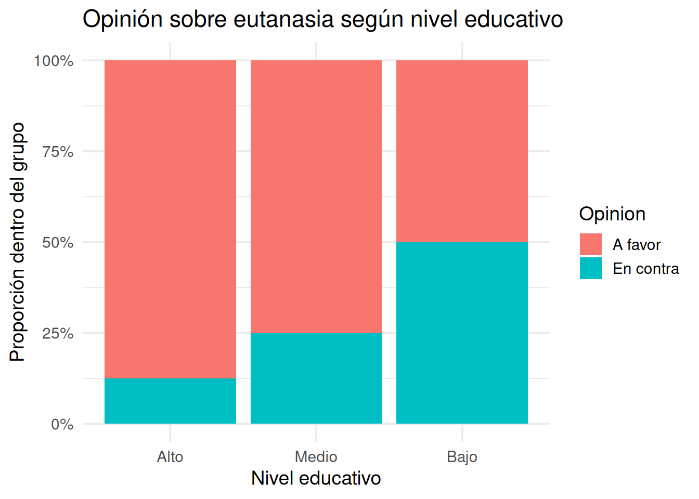
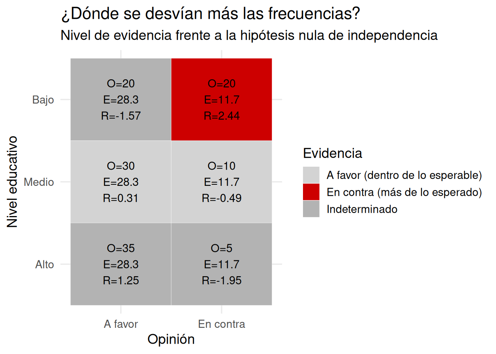

#> Rojo Azul Verde Amarillo Violeta
#> 6 2 5 3 48 Pruebas chi cuadrado
8.1 De promedios a categorías
Hasta ahora, cuando queríamos saber si había una diferencia entre grupos, lo hacíamos comparando promedios. Por ejemplo: ¿tienen más ansiedad las personas que hacen ejercicio que las que no? ¿Tienen mayor rendimiento los estudiantes que duermen más horas? Para responder eso, usábamos la prueba t.
Pero no todas las preguntas se contestan con medias. Muchas veces, especialmente en psicología y ciencias sociales, lo que tenemos no son números continuos, sino categorías. Personas que dijeron “sí” o “no”. Participantes que eligieron una opción. Pacientes con o sin diagnóstico. Grupos definidos por género, edad, nivel educativo. Respuestas a ítems cerrados. Datos que no se miden en una escala, sino que se cuentan.
Y entonces, lo que cambia no es solo el tipo de dato. Cambia también la pregunta estadística. Ya no preguntamos si el promedio de un grupo es mayor que el del otro. Preguntamos algo más básico, pero igual de importante: ¿Lo que estamos viendo en estas categorías podría haber ocurrido solo por azar?
8.2 Una tabla que da que pensar
Imaginemos que queremos saber si hay una relación entre el nivel educativo y la postura frente a la eutanasia. Entrevistamos a un grupo de personas y les preguntamos dos cosas:
- ¿Cuál es su nivel educativo?
- ¿Está usted a favor o en contra de la legalización de la eutanasia?
Los datos nos dan esta tabla:
| Nivel educativo | A favor | En contra |
|---|---|---|
| Bajo | 25 | 15 |
| Medio | 30 | 10 |
| Alto | 35 | 5 |
A simple vista, parece haber una tendencia. Cuanto mayor el nivel educativo, mayor el apoyo a la eutanasia. Pero… ¿esa diferencia es real? ¿O podría deberse simplemente al azar?
8.3 La lógica inferencial, otra vez
Esta pregunta —que parece nueva— en realidad es la misma que nos hacíamos con las medias. Lo único que cambió es el tipo de dato.
Con la prueba t, comparamos dos promedios. Con chi cuadrado, comparamos lo que observamos en una tabla de frecuencias con lo que esperaríamos ver si no hubiera ninguna diferencia.
La lógica es la misma:
- Tenemos una hipótesis nula: no hay relación entre las variables.
- Tenemos una observación: en la muestra, las frecuencias no son iguales.
- Y queremos saber: ¿esas diferencias son demasiado grandes como para explicarlas por azar?
8.4 El plan para este capítulo
A lo largo de este capítulo vamos a aprender a responder esa pregunta. Pero, como siempre, lo haremos paso a paso:
Primero vamos a aprender a mirar una tabla y preguntarnos qué esperaríamos ver si no hubiera relación.
Después vamos a aprender a medir cuán distintas son las frecuencias observadas de las esperadas.
Vamos a ver dos tipos de prueba chi cuadrado:
- una para ver si una variable sigue cierta distribución (bondad de ajuste),
- otra para ver si dos variables están relacionadas (independencia).
Vamos a usar gráficos y simulaciones para entender mejor qué está en juego.
Y vamos a terminar con un repaso de lo que podemos y no podemos concluir con esta herramienta.
Pero antes de hacer cuentas, fórmulas o tests, hay algo que siempre conviene hacer primero: mirar bien los datos, y preguntarse si lo que estamos viendo coincide con lo que esperaríamos ver si no pasara nada especial.
8.5 Observar no es lo mismo que esperar
Cuando miramos una tabla de frecuencias, solemos enfocarnos en los números que están ahí. Cuántas personas dijeron sí. Cuántas dijeron no. Cuántas eligieron cada opción. Pero si queremos hacer inferencia, no alcanza con ver qué hay. Tenemos que preguntarnos: ¿Esto que hay… es lo que uno esperaría ver si no hubiera ningún efecto?
Esa es la clave. Porque las diferencias entre grupos, por sí solas, no dicen nada. En cualquier muestra real vamos a tener variaciones. Lo importante es saber si esas variaciones son demasiado grandes como para atribuirlas al azar. Y para eso, primero tenemos que imaginar cómo se verían los datos si no hubiera ninguna relación entre las variables.
8.6 Un ejemplo simple
Imaginá que una empresa de caramelos asegura en su envoltorio, con total descaro y en letras bien grandes: “¡Colores distribuidos equitativamente!” Según ellos, cada paquete contiene la misma cantidad de caramelos rojos, azules, verdes, amarillos y violetas. Todo muy democrático… en teoría.
Pero vos, que no naciste ayer, sospechás que algo huele raro (y no es el aroma a frambuesa artificial). Así que decidís hacer ciencia: comprás un paquete, lo abrís, y contás uno por uno los caramelos. Compramos un paquete, lo abrimos, y contamos los caramelos. Obtenemos:
Lo que vemos es que hay más rojos, menos azules, y los otros colores más o menos cerca de lo prometido. Pero la pregunta no es si hay diferencias. Las hay. La pregunta es: ¿Estas diferencias son lo suficientemente grandes como para pensar que los caramelos no están bien distribuidos?
Si la empresa cumpliera con su promesa, y la distribución fuera perfectamente equitativa, deberíamos haber visto 4 caramelos de cada color:
#> Rojo Azul Verde Amarillo Violeta
#> 4 4 4 4 48.7 Pongámoslos uno al lado del otro
Para verlo más claro, vamos a graficar las frecuencias observadas y esperadas:
Ahora sí podemos ver la diferencia. El color rojo tiene 6 caramelos, cuando deberían ser 4. El azul, apenas 2. El resto está más cerca de lo esperado, pero también hay pequeñas desviaciones.
A simple vista, podríamos decir: parece haber un pequeño desequilibrio. Pero, otra vez, lo que importa no es solo que haya diferencia, sino cuánto importa esa diferencia.
Por eso, vamos a dar un paso más: vamos a mirar celda por celda, y tratar de identificar dónde están las discrepancias más grandes, y si pueden ser explicadas por el azar.
8.8 ¿Dónde están las diferencias más fuertes?
Ya vimos los datos observados. Ya sabemos lo que esperaríamos ver si los caramelos estuvieran perfectamente distribuidos. Pero una pregunta sigue abierta:
¿Qué tanto se desvió cada color de lo que debería haber sido?
Y más aún:
¿Cuáles de esas diferencias son suficientemente grandes como para dudar de la hipótesis nula?
Porque en la práctica, incluso si la empresa es honesta y mezcla bien los colores, es normal que en un paquete aparezcan 3 verdes o 5 amarillos. Lo que necesitamos es una forma de medir cada discrepancia en su contexto. Que nos diga: esto está dentro de lo esperable, o esto sí parece demasiado.
8.9 Residuales estandarizados: cuánto se desvía cada celda
Para cada color, podemos calcular una medida que nos diga cuánto se aleja lo observado de lo esperado, pero ajustado al valor esperado. Se llama residual estandarizado y se calcula así:
\[ \text{Residual estandarizado} = \frac{O - E}{\sqrt{E}} \]
- Si el valor está cerca de 0, lo observado es parecido a lo esperado → no hay evidencia de problema.
- Si el valor es mayor a +2 o menor a -2, la discrepancia es grande en relación a lo esperado → evidencia en contra de la hipótesis nula.
- Si es menor a ±1, podemos decir que la diferencia es irrelevante → evidencia a favor de la nula.
Esta visualización no reemplaza el test estadístico. Pero lo complementa de forma poderosa. Nos dice, sin fórmulas, sin cálculo manual:
- Dónde están las discrepancias más marcadas.
- En qué dirección van (más o menos de lo esperado).
- Y si esas discrepancias son lo bastante grandes como para generar sospechas.
En este ejemplo:
- El color rojo aparece bastante más de lo esperado → residual positivo grande → evidencia en contra de la hipótesis nula.
- El azul aparece bastante menos → residual negativo → también evidencia en contra.
- Otros colores están cerca de lo esperado → residual bajo → evidencia a favor de la nula.
Y ahora que sabemos qué tanto se desvían los datos celda por celda, podemos avanzar al siguiente paso: resumir todas esas discrepancias en un único número. Ese número es el estadístico chi cuadrado.
8.10 Un número para resumir toda la discrepancia
Ya calculamos las diferencias entre lo observado y lo esperado. Las miramos una por una, y hasta las coloreamos según si apoyaban o desafiaban la hipótesis nula. Ahora vamos a dar el siguiente paso: resumir todas esas diferencias en un solo número.
Ese número es el estadístico chi cuadrado, y su lógica es simple:
Cuanto más lejos estén los valores observados de los esperados, más grande será el valor de \(\chi^2\).
Y si el valor de \(\chi^2\) es muy grande, tenemos motivos para pensar que las diferencias no se deben solo al azar.
8.10.1 Cómo se calcula
El estadístico chi cuadrado se define así:
\[ \chi^2 = \sum \frac{(O - E)^2}{E} \]
- \(O\) = frecuencia observada
- \(E\) = frecuencia esperada
Esto se hace celda por celda, y después se suman todos los valores. El resultado es un único número, que representa el total de discrepancia relativa en la tabla.
8.10.2 Calculemos el \(\chi^2\) de los caramelos
#>
#> Chi-squared test for given probabilities
#>
#> data: observado
#> X-squared = 2.5, df = 4, p-value = 0.6446Este resultado nos da:
- El valor de \(\chi^2\)
- Los grados de libertad, que en este caso son: número de categorías − 1 = 4
- El valor p
Pero… ¿qué significa ese número de \(\chi^2\)? ¿Es grande? ¿Es chico? ¿Cómo lo interpretamos?
Para eso, necesitamos ver la distribución chi cuadrado.
8.11 La distribución chi cuadrado
Igual que la t, el estadístico \(\chi^2\) tiene una distribución de referencia. Esa distribución nos dice qué tan comunes o raros son distintos valores de \(\chi^2\) si la hipótesis nula fuera cierta.
La distribución chi cuadrado:
- Solo tiene valores positivos (porque las discrepancias al cuadrado nunca dan negativo).
- Tiene una forma asimétrica: es más alta cerca de 0, y cae rápidamente.
- Cambia de forma según los grados de libertad (df).
Veamos cómo se ve:
- Con df = 1, la curva es muy sesgada: muchas observaciones cerca de 0, y pocas muy grandes.
- A medida que aumentan los grados de libertad, la curva se “desplaza” hacia la derecha y se va haciendo más simétrica.
- Siempre se mantiene positiva: no hay valores negativos de \(\chi^2\).
El valor p es el área bajo la curva, a la derecha del valor observado. Eso representa: ¿qué tan probable es obtener un valor así (o mayor) si la hipótesis nula fuera cierta?
8.12 Cómo cambia la distribución chi cuadrado
Ya vimos que la distribución chi cuadrado es la que usamos para decidir si un valor observado de \(\chi^2\) es raro o no, bajo la hipótesis nula. Pero algo que aún no exploramos es cómo cambia esa distribución dependiendo de los grados de libertad.
Esto es importante por dos motivos:
- El número de grados de libertad (df) depende de la cantidad de categorías que estamos comparando.
- La forma de la distribución determina qué valores de \(\chi^2\) son considerados grandes o raros.
A menor df, la curva es muy sesgada hacia la izquierda, y valores grandes son extremadamente improbables. A mayor df, la curva se desplaza y se vuelve más simétrica.
8.12.1 Una animación para verlo mejor
En lugar de mostrar una curva estática para cada valor de df, vamos a ver cómo evoluciona la forma de la distribución chi cuadrado cuando los grados de libertad aumentan.
8.12.2 ¿Qué muestra la animación?
- Con df = 1, la curva es muy concentrada cerca de 0 y cae abruptamente.
- A medida que df aumenta, la curva se desplaza hacia la derecha y se vuelve más suave.
- Siempre es una distribución de cola positiva (nunca hay valores negativos).
Esto es fundamental para interpretar el valor p. Lo que consideramos “inusual” depende del df. Un valor de \(\chi^2 = 10\) puede ser muy raro si df = 2, pero bastante común si df = 10.
8.13 ¿Qué tan grande es grande? Simular para entender
Ya sabemos que el estadístico chi cuadrado mide cuán distintas son las frecuencias observadas de las esperadas, y que su valor aumenta cuando las diferencias son grandes. Y también sabemos que para interpretar ese valor, lo comparamos con una distribución teórica: la distribución chi cuadrado.
Pero ahora vamos a hacer algo distinto. No vamos a mirar la fórmula. Vamos a simular el azar. Vamos a generar miles de situaciones donde la hipótesis nula sea cierta, y vamos a ver qué valores de \(\chi^2\) produce el azar por sí solo.
La idea es simple:
Si el azar genera a veces valores como el que observamos, entonces lo que vimos podría no ser tan raro. Pero si el azar casi nunca produce valores así… entonces lo que vimos probablemente no sea azar.
8.13.1 Simulemos caramelos honestos
Supongamos que la empresa de caramelos efectivamente cumple con la proporción uniforme (20% para cada color). Simulamos muchos paquetes de 80 caramelos, cada uno con colores elegidos al azar con esa distribución, y para cada uno calculamos su \(\chi^2\).
La línea roja muestra el valor de \(\chi^2\) que obtuvimos con nuestro paquete de caramelos. Las barras muestran qué tan comunes son distintos valores de \(\chi^2\) si la distribución es justa. Si la línea roja está muy a la derecha —en la cola de la distribución— entonces el valor observado es raro bajo la nula. Y eso es exactamente lo que nos dice el valor p.
8.13.2 El valor p, una vez más
Podemos calcular el valor p directamente desde esta simulación:
#> [1] 0.673Este número es la proporción de simulaciones que dieron un valor de \(\chi^2\) igual o mayor al observado. Es decir: una versión empírica del valor p. Y debería coincidir bastante bien con el valor p que calculamos antes con chisq.test().
¿Por qué esto importa? Porque a veces, mirar un número no alcanza. Pero ver cuán frecuente —o infrecuente— es ese número en un mundo donde no hay efecto real, puede ayudar a construir una mejor intuición. Y eso es lo que hace el valor p: te dice qué tan probable es tu resultado si todo fuera azar.
Perfecto, vamos ahora con la segunda gran aplicación de la prueba chi cuadrado: la prueba de independencia entre dos variables categóricas. Retomamos el estilo narrativo y visual, incorporando código en R y guiando al lector paso a paso para entender qué significa “independencia”, cómo se construyen las esperadas, cómo se ve la discrepancia y cómo se interpreta el test.
8.14 Dos variables, una pregunta: ¿están relacionadas?
Hasta ahora usamos chi cuadrado para ver si una sola variable se distribuía como esperábamos. Pero la pregunta más común en psicología y ciencias sociales es otra:
¿Están relacionadas estas dos variables?
Por ejemplo:
- ¿Están asociadas la orientación política y la actitud frente a la legalización del cannabis?
- ¿Varía el apoyo a la eutanasia según el nivel educativo?
- ¿Hay diferencias de género en la elección de carrera?
Lo que queremos saber no es si los porcentajes son iguales. Lo que queremos saber es si las diferencias que vemos en la tabla podrían haberse generado por azar.
8.15 Un ejemplo realista: eutanasia y nivel educativo
Supongamos que en una encuesta preguntamos dos cosas:
- ¿Está usted a favor o en contra de la legalización de la eutanasia?
- ¿Cuál es su nivel educativo (bajo, medio, alto)?
Las respuestas nos dan esta tabla:
#>
#> A favor En contra
#> Alto 35 5
#> Medio 30 10
#> Bajo 20 208.16 Visualizar la tabla: proporciones por fila
Para ver mejor la tendencia, graficamos la proporción de personas a favor y en contra dentro de cada nivel educativo.

Parece haber un patrón: cuanto mayor el nivel educativo, mayor el apoyo a la eutanasia. Pero… ¿es esa diferencia suficientemente grande como para pensar que las variables están asociadas?
8.17 ¿Qué esperaríamos ver si no hubiera relación?
Si nivel educativo y opinión fueran independientes, esperaríamos ver una distribución en la que la proporción de personas a favor o en contra fuera la misma en todos los niveles.
Eso significa que las frecuencias esperadas se calculan como producto de los totales marginales. R lo hace por nosotros:
#>
#> A favor En contra
#> Alto 28.3 11.7
#> Medio 28.3 11.7
#> Bajo 28.3 11.78.18 ¿Dónde están las mayores discrepancias?
Podemos usar el mismo enfoque visual que antes: calcular residuales estandarizados y clasificarlos según el nivel de evidencia frente a la hipótesis nula.

8.19 Aplicar la prueba chi cuadrado
#>
#> Pearson's Chi-squared test
#>
#> data: tabla
#> X-squared = 14.118, df = 2, p-value = 0.0008598La prueba nos da el valor de \(\chi^2\), los grados de libertad, y el valor p.
- Si p < 0.05 → rechazamos la hipótesis de independencia → hay evidencia de asociación.
- Si p > 0.05 → no tenemos evidencia suficiente para decir que las variables están relacionadas.
8.20 Errores comunes y buenas prácticas
Aunque la prueba chi cuadrado es simple y poderosa, también es fácil de malinterpretar. Acá te dejamos una lista de errores típicos, con sus respectivas recomendaciones.
8.20.1 Error 1: Usar chi cuadrado con frecuencias esperadas muy bajas
La prueba chi cuadrado asume que las frecuencias esperadas no son demasiado pequeñas. Si hay celdas con valores esperados menores a 5, especialmente en tablas pequeñas, el test puede volverse poco fiable.
Buena práctica: Si tenés celdas con esperadas < 5, intentá agrupar categorías o considerá una prueba exacta (como la de Fisher).
8.20.2 Error 2: Interpretar el valor p como tamaño del efecto
Un valor p bajo te dice que la diferencia es improbable bajo la nula, pero no te dice cuán grande o importante es la diferencia.
Buena práctica: Complementá la prueba con una visualización de las discrepancias y, si es posible, medidas de efecto (como el V de Cramer para tablas grandes).
8.20.3 Error 3: Leer mal las proporciones condicionales
A veces se malinterpreta una tabla normalizada por filas como si fuera por columnas, o viceversa (ver capítulo 3. Tablas). Eso puede llevar a conclusiones completamente erróneas.
Buena práctica: Siempre chequeá qué representa cada celda: ¿proporción dentro de qué grupo? Acompañar las tablas con gráficos ayuda muchísimo.
8.20.4 Error 4: Pensar que una relación estadística implica causalidad
La prueba chi cuadrado detecta asociación, no dirección ni causalidad. Dos variables pueden estar relacionadas por muchos motivos.
Buena práctica: Interpretá los resultados con cautela. Preguntate siempre qué otra variable podría estar influyendo.
8.20.5 Error 5: Usar chi cuadrado para variables que no son categóricas
No tiene sentido aplicar esta prueba a datos continuos discretizados sin justificación, o a variables numéricas que deberían analizarse con una prueba de medias.
Buena práctica: Reservá chi cuadrado para variables nominales u ordinales con pocos niveles. Para otras situaciones, hay mejores herramientas.
8.21 Lo que aprendimos
Este capítulo fue una expansión natural del anterior. Aprendimos a aplicar la lógica de la inferencia —comparar lo que observamos con lo que esperaríamos por azar— al mundo de los datos categóricos.
Vimos que hay dos grandes usos de la prueba chi cuadrado:
Prueba de bondad de ajuste ¿Una sola variable se reparte como debería?
Prueba de independencia ¿Dos variables categóricas están relacionadas?
En ambos casos:
- Calculamos las frecuencias esperadas bajo la hipótesis nula.
- Comparamos esas esperadas con las observadas.
- Sumamos las diferencias, ponderadas por el tamaño esperado.
- Obtenemos un valor \(\chi^2\).
- Y con ese valor, consultamos la distribución chi cuadrado para saber si ese resultado es raro o no bajo la hipótesis nula.
Vimos que el valor p representa la probabilidad de ver un resultado así (o más extremo) si no hubiera relación. Y aprendimos a visualizar las diferencias celda por celda, para entender dónde están las mayores discrepancias.
Una tabla puede contener una historia. La prueba chi cuadrado te ayuda a saber si esa historia es una coincidencia pasajera… o algo más profundo que vale la pena investigar.